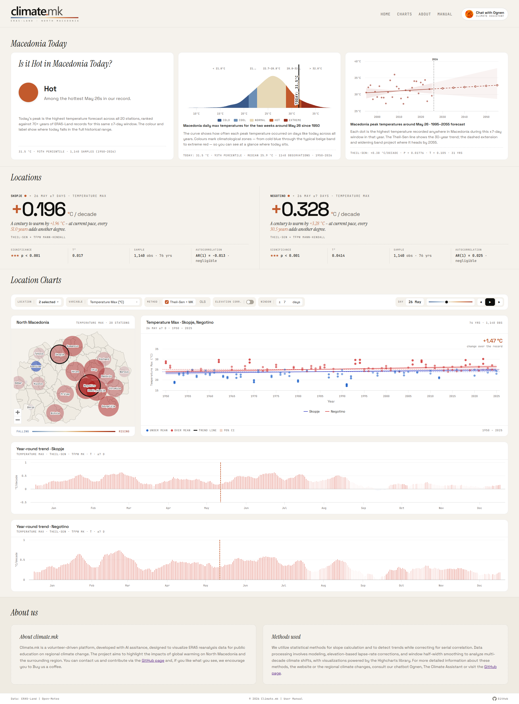
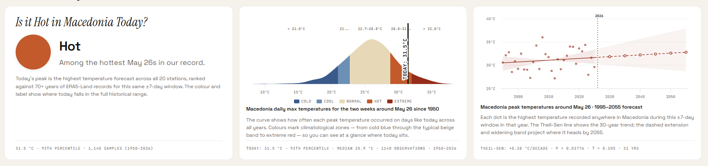
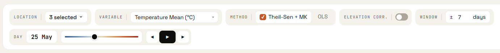
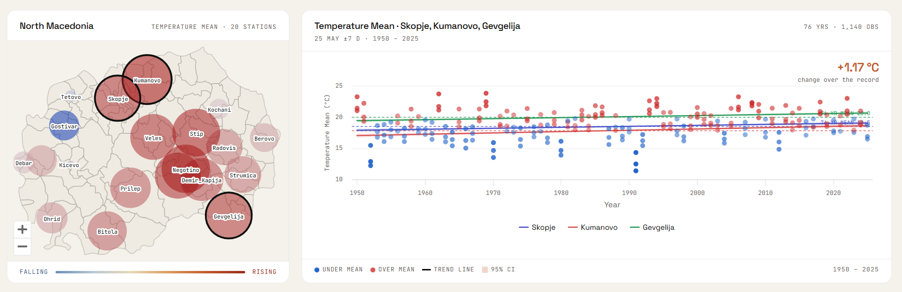
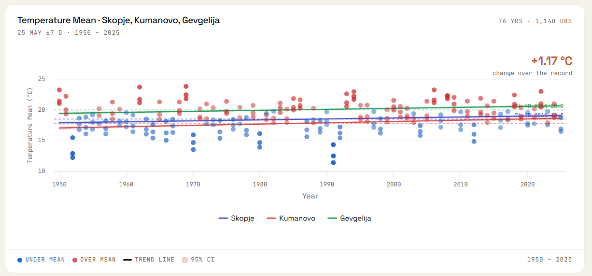
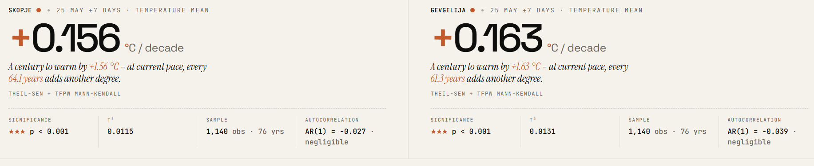
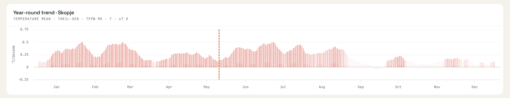

climate.mk User Manual & Statistical Reference
climate.mk is an interactive web dashboard for exploring long-term climate trends across North Macedonia. It visualises ERA5-Land reanalysis data covering the period 1950–present for 20 locations, using robust statistical methods to detect and quantify trends in temperature, precipitation, and evapotranspiration.
This manual explains every control, chart, and statistic shown on the site. The Statistical Methods section provides full technical detail for researchers and educators. All features are accessible without any prior statistical knowledge — the site is designed to communicate findings clearly to a general audience.
All data comes from the ERA5-Land reanalysis dataset produced by ECMWF, accessed via the Open-Meteo API. ERA5-Land provides daily climate variables reconstructed from atmospheric models and observations, starting from 1950.

Quick Start
Before exploring trends by location, check the Macedonia Today panel at the top of the page. It shows how today's temperature across Macedonia compares to the historical record for this time of year.
-
Choose a location Click the Location dropdown in the toolbar and select one or more stations (up to 6). Skopje and the station with the largest max-temperature trend are pre-selected automatically on load. You can also click a bubble on the map to toggle a location.
-
Pick a climate variable Use the Variable dropdown to choose between temperature (max, min, mean), precipitation, or evapotranspiration. The map, chart, and hero card all update immediately.
-
Select a day of year Drag the Day slider or click the play button (▶) to animate through the year. The date badge shows the current selection (e.g. "Apr 15"). All charts update for that calendar day.
-
Read the trend The large number in the hero card shows the trend in units per decade. A positive value (orange) means rising; negative (blue) means falling. Below the number, the sig-row shows the p-value, correlation strength, and sample size.
-
Explore across the year The calendar chart below the main panels shows the trend for every day of the year at once. Bar height is the slope; colour and opacity indicate direction and statistical significance.
Macedonia Today
When the site loads, a live Macedonia Today panel appears at the top of the page. It fetches today's maximum temperature forecast from Open-Meteo for all 20 stations and compares the country-wide peak against the ERA5-Land historical record for the same ±7-day window around today's date. The panel is automatically hidden if the forecast data is unavailable.

Card 1 — Is it Hot in Macedonia Today?
The left card gives an immediate qualitative reading of today's conditions:
- Colour dot — a filled circle whose colour matches the temperature category: dark blue (Cold), blue (Cool), beige (Normal), orange (Hot), dark red (Extreme).
- Category title — the named zone: Cold, Cool, Normal, Hot, or Extreme.
- Description — a plain-language sentence giving context for the category.
- Footer — today's peak temperature (°C), its historical percentile, the number of observations used, and the year range of the historical record.
Today's value is the highest maximum temperature forecast across all 20 stations — a true country-wide peak. It is ranked against the ERA5-Land record using a ±7-day window around today's date, covering all years from 1950 to present.
Card 2 — Historical distribution chart
The centre card shows a kernel density estimate (KDE) of how often each peak temperature occurred on days like today across all years in the record. The x-axis is temperature; the y-axis is relative frequency.
- Colour zones — five zones painted beneath the curve correspond exactly to Card 1's categories (Cold, Cool, Normal, Hot, Extreme), using the same colour scale.
- TODAY line — a vertical marker showing where today's value falls within the distribution.
- Legend — appears below the chart, labelling the five zones by colour.
- Footer — today's value, percentile, historical median, observation count, and year range.
Hovering over the chart shows the density and temperature zone at the cursor position.
Card 3 — Annual peak temperature trend
The right card shows the long-term trend in country-wide peak temperatures for this time of year, using the last 30 years of ERA5-Land data and projecting forward to 2055.
- Scatter dots — one dot per year, showing the highest temperature recorded anywhere in Macedonia in the ±7-day window around today's date.
- Theil-Sen trend line — solid line for the historical period, dashed for the forecast extension. The slope is computed using the same Theil-Sen + Mann-Kendall method as the main regression chart.
- 95% confidence interval band — shaded band around the trend line, widening naturally in the forecast period to reflect increasing uncertainty over time.
- Milestone markers — hollow circle markers at 2030, 2035, 2040, 2045, 2050, and 2055 on the forecast line, with tooltips showing the projected temperature.
- Current year line — a dotted vertical line marking the present year.
- Footer — Theil-Sen slope (°C/decade), p-value, Kendall's τ, and the number of years used.
The forecast extension is a statistical projection of the observed trend — it assumes the current rate of change continues. It is not a climate model prediction. The widening confidence band reflects genuine statistical uncertainty: the further out the projection, the less reliable the point estimate.
Controls

| Control | Options / Range | Description |
|---|---|---|
| Location | 1–6 of 20 stations | Multi-select dropdown. Select up to 6 stations to overlay on the regression chart and display separate hero cards. The map always shows all 20 stations. |
| Variable | 5 options | Climate variable to analyse. See Variables & Units for full list. Changing variable resets the elevation correction to Off. |
| Method | Theil-Sen + MK · OLS | Statistical method for fitting the trend line. Theil-Sen + MK (default) is robust and accounts for autocorrelation. OLS is standard linear regression. See Statistical Methods. |
| Elevation corr. | On · Off (default) | Applies a lapse-rate elevation correction to temperature values, adjusting for the difference between the station elevation and the ERA5-Land grid elevation. Available for temperature variables only. |
| Window | ±1 to ±90 days (default ±7) | Half-width of the calendar window around the selected day. ±7 means all daily values within 7 days either side of the target date are included each year, giving a 15-day total window. A wider window gives more data points per year but smooths over within-season variation. |
| Day slider | Day 1 (Jan 1) – Day 365 (Dec 31) | Selects the target calendar day. The date badge (e.g. "Apr 15") updates as you drag. You can also click the date badge directly to open a calendar date-picker and jump to any specific date. All charts update after a short debounce delay. |
| ◀ Prev / ▶ Play / ▶ Next | — | Prev and Next step the day by one. Play animates through all 365 days, waiting for each day's data to load before advancing. Click again to pause. |
The Map

The map shows all 20 stations simultaneously for the currently selected variable, day of year, and window. Each station is represented by a coloured bubble.
Bubble colour
Colour indicates the direction of the trend. For temperature variables, orange–red means warming and blue means cooling. For precipitation, blue means wetter and brown means drier. For evapotranspiration, amber means increasing and green means decreasing. Stations with little or no trend appear near-neutral grey.
Bubble size
Size indicates the magnitude of the trend — a larger bubble means a stronger trend per decade. The scaling uses a power transformation so that moderate trends are visually distinguishable from very strong ones.
Interaction
Hover over any bubble to see the station name, trend value (per decade), p-value, and significance rating. Click a bubble to toggle that station in the multi-location selection.
The subtitle below the "North Macedonia" heading shows the currently selected variable name alongside the station count.
The Regression Chart

The regression chart shows one data point per year — the aggregated value for the selected window around the chosen day of year. When multiple locations are selected, each location has its own coloured series.
Scatter dots
Each dot represents one year. Dots are coloured by their anomaly — how far above or below the long-term mean that year fell. Dots above the mean are warmer/wetter (orange–red), dots below are cooler/drier (blue). Intensity increases with the size of the anomaly.
Trend line
The straight line is the fitted trend, computed using the selected method (Theil-Sen or OLS). Its slope equals the trend per year; multiply by 10 for the trend per decade as shown in the hero card.
95% Confidence Interval (shaded band)
The shaded band around the trend line shows the 95% confidence interval. Where the band is narrow, the trend estimate is precise. A wide band means greater uncertainty. See Confidence Intervals for how this is computed for each method.
Baseline (dashed line)
The horizontal dashed line marks the long-term mean for that location, day of year, and window. Points above the baseline are positive anomalies; points below are negative. When multiple locations are shown, each has its own colour-coded baseline.
Chart footer
The colour legend at the bottom identifies dot colours and the CI band. The year range (e.g. "1950 – 2026") shows the span of available data for the first selected location. The top-right shows the number of years and observations used.
"Change over the record" annotation
The figure on the left of the chart (e.g. "+1.23 °C") shows the total change over the record: the value of the trend line at the end year minus the value at the start year.
Hero Cards & Stats

One hero card appears at the top of the page for each selected location. The card summarises the key finding for that location, variable, and day of year.
Trend number
The large number is the trend per decade — the slope of the trend line multiplied by 10. The sign (+ or −) and colour (orange = rising, blue = falling) indicate direction. The unit depends on the variable (°C/decade for temperature, mm/decade for precipitation).
Verdict (temperature only)
For temperature variables, an italic sentence describes the trend in plain language, for example: "A century to warm by +0.37 °C – at current pace, every 27 years adds another degree." The century-scale projection is simply the slope × 100 and does not account for acceleration or deceleration of the trend.
Sig-row statistics
Below the main number, four statistics are shown:
| Field | Description |
|---|---|
| Significance | The p-value from the significance test (Mann-Kendall for Theil-Sen; t-test for OLS), presented as a threshold and star rating. See the significance thresholds table. |
| τ² (tau-squared) | For Theil-Sen + MK: Kendall's τ squared, a normalised measure of trend strength ranging from 0 (no monotonic trend) to 1 (perfect monotonic trend). Analogous to R² but rank-based. |
| R² | For OLS: the coefficient of determination — the fraction of inter-annual variance explained by the linear trend. Ranges from 0 (no fit) to 1 (perfect fit). |
| Sample | The number of annual values (years) and, for non-sum variables, the number of raw daily observations used for slope fitting. |
| Autocorrelation | Lag-1 autocorrelation (AR(1)) of the annual series, shown only for Theil-Sen + MK. Describes year-to-year persistence: warm years tend to follow warm years. This is the quantity that TFPW pre-whitening corrects for. |
The Calendar Chart

The calendar chart gives a full-year overview of climate trends for a selected location. One panel appears per selected location.
What each bar shows
- Height — the trend per decade for that calendar day (same units as the regression chart)
- Direction — bars above the zero line are positive trends (rising/warming/wetter); below are negative (falling/cooling/drier)
- Colour — same colour scheme as the map: orange–red for warming, blue for cooling, blue for wetter, brown for drier, amber for higher ET₀, green for lower ET₀
- Opacity — encodes statistical significance: opaque bars (p < 0.001) are highly significant; very faint bars (p ≥ 0.05) are not statistically significant
Opacity and significance
Vertical line
A vertical dashed line marks the currently selected day of year (from the Day slider). This helps locate where the regression chart's current day sits within the annual cycle.
Clicking a bar
Clicking any bar in the calendar chart jumps the Day slider to that calendar day and updates the regression chart and map accordingly.
Statistical Methods
Theil-Sen + Mann-Kendall is the default and recommended method — it is robust to outliers, makes no distributional assumptions, and correctly accounts for year-to-year autocorrelation. OLS is provided for comparison and is familiar to most users, but its p-value can be misleading when autocorrelation is present.
Theil-Sen Slope Estimator
The Theil-Sen estimator computes the median of all pairwise slopes between every pair of data points. For n annual data points there are n(n−1)/2 pairs, and the slope is the median of all those pairwise gradients.
Unlike OLS, the Theil-Sen slope is not affected by individual extreme years (outliers). A single anomalous year cannot shift the median slope substantially, making it well-suited to climate data where extreme events occur.
Mann-Kendall Test with TFPW (Yue-Wang)
The Mann-Kendall test is a rank-based non-parametric test for monotonic trends. It asks: are the data systematically rising or falling over time, regardless of the shape of the distribution?
The standard Mann-Kendall test assumes that annual values are independent. In practice, climate variables show positive autocorrelation: warm years tend to follow warm years (AR(1) ≈ 0.1–0.3 in this dataset). Ignoring this inflates the test statistic and produces false-positive significant trends.
Trend-Free Pre-Whitening (TFPW), also called the Yue-Wang modification, corrects for this:
- Estimate and remove the trend from the series to obtain the residuals
- Estimate the lag-1 autocorrelation (AR(1) coefficient) of the residuals
- Remove the autocorrelation from the detrended series
- Add the trend back and apply the standard Mann-Kendall test
This gives a properly calibrated p-value that is not inflated by autocorrelation. The Yue-Wang TFPW approach is recommended by the World Meteorological Organisation (WMO) for climate trend analysis.
The test returns two quantities:
- p-value — the probability the observed trend arose by chance under the null hypothesis of no trend. Values below 0.05 are conventionally considered statistically significant.
- Kendall's τ (tau) — a normalised correlation between time and the data values, ranging from −1 (perfectly decreasing) to +1 (perfectly increasing). The site displays τ² (0 to 1) for comparability with R².
OLS Linear Regression
Ordinary Least Squares fits a straight line y = slope × x + intercept that minimises the sum of squared residuals. The slope is the rate of change per year.
A design detail: the slope is fitted on all raw daily values within the window (maximising data use), while R² and the p-value are computed on annual means (one observation per year). This prevents pseudo-replication — daily values within the same window are correlated with each other, so treating them as independent data points would grossly overstate the sample size and produce spuriously small p-values.
OLS assumes residuals are normally distributed and independent. When autocorrelation is present, the OLS p-value may be too small (false positives). Use Theil-Sen + MK for authoritative results.
95% Confidence Intervals
The shaded band on the regression chart is a 95% confidence interval for the trend line — not for individual data points.
For Theil-Sen: the confidence interval is derived from the 95% quantiles of the pairwise slope distribution, as computed by scipy.stats.theilslopes(alpha=0.95). Upper and lower bounds pivot through the median point of the data, so the band has a characteristic "bowtie" shape that is widest at the edges of the record and narrowest near the centre.
For OLS: the confidence interval is computed from the standard error of the fitted line at each point:
where SEres is the residual standard error. This band widens near the ends of the data, reflecting greater extrapolation uncertainty far from the mean year.
Window ±days Aggregation
Rather than analysing a single calendar date (which would have very high day-to-day noise), the site aggregates all data within a symmetric window around the target date. With the default ±7 days, all observations between target_date − 7 and target_date + 7 are included, giving 15 days of data per year.
Year-end wraparound is handled correctly: a window centred on January 3 with ±7 days includes observations from December 27 of the previous year, and those late-December observations are assigned to the following calendar year for aggregation purposes. This prevents artificial discontinuities at the start of each year.
For temperature and ET₀, annual values are computed as the mean of daily values within the window. For precipitation, annual values are computed as the sum (total accumulation in the window period).
Elevation Lapse-Rate Correction
ERA5-Land values are computed at the model's grid-cell elevation, which may differ from the actual station elevation. For mountain stations like Lazaropole (1350 m a.s.l.) the difference can be substantial.
When elevation correction is enabled, temperature values are adjusted using the standard atmospheric lapse rate:
where ΔElevation = station elevation − ERA5 grid elevation. This brings temperatures to a common reference level, making comparisons between stations at different elevations more meaningful. The correction only applies to the three temperature variables and is disabled by default.
Significance Thresholds
Statistical significance is reported using both a p-value and a star rating for quick visual assessment:
A non-significant result does not mean there is no trend — it means the available data are insufficient to distinguish a real trend from natural variability with 95% confidence. Shorter records, noisier variables, and narrow windows all reduce statistical power.
Variables & Units
| Variable | Unit | Aggregation | Description |
|---|---|---|---|
| Temperature Max | °C | Mean of daily maxima in window | Average of the daily maximum 2 m air temperature across the selected window period each year. |
| Temperature Min | °C | Mean of daily minima in window | Average of the daily minimum 2 m air temperature. Often shows stronger warming trends than the maximum, reflecting warming of cold nights. |
| Temperature Mean | °C | Mean of daily means in window | Average 2 m air temperature — the most commonly used temperature variable for trend analysis. |
| Precipitation | mm | Sum within window | Total precipitation (rain + snowmelt) accumulated within the window period each year. Trends show whether a particular time of year is becoming wetter or drier. |
| ET₀ Evapotranspiration | mm | Sum within window | FAO Penman-Monteith reference evapotranspiration — an estimate of water demand by a hypothetical grass reference crop. Increases with temperature and wind, decreases with humidity. Useful as a proxy for drought stress. |
The lapse-rate elevation correction is available only for the three temperature variables. Precipitation and ET₀ do not have a simple elevation correction applied.
Locations
The dataset covers 20 stations distributed across North Macedonia, from the lowland Vardar valley to mountain sites above 1000 m elevation.
| Station | Latitude | Longitude | Region |
|---|---|---|---|
| Berovo | 41.7047° N | 22.8556° E | East |
| Bitola | 41.0314° N | 21.3347° E | Southwest |
| Debar | 41.5239° N | 20.5239° E | West |
| Demir Kapija | 41.4042° N | 22.2458° E | Southeast |
| Gevgelija | 41.1414° N | 22.5011° E | South |
| Gostivar | 41.7956° N | 20.9089° E | West |
| Kavadarci | 41.4331° N | 22.0119° E | Central |
| Kičevo | 41.5131° N | 20.9589° E | West-central |
| Kochani | 41.9167° N | 22.4167° E | East |
| Kumanovo | 42.1322° N | 21.7144° E | North |
| Lazaropole | 41.5394° N | 20.6956° E | West (mountain) |
| Negotino | 41.4831° N | 22.0894° E | Central |
| Ohrid | 41.1231° N | 20.8016° E | Southwest (lakeside) |
| Prilep | 41.3453° N | 21.5550° E | Central |
| Radoviš | 41.6386° N | 22.4647° E | East |
| Skopje | 41.9965° N | 21.4314° E | Central (capital) |
| Štip | 41.7457° N | 22.1961° E | East-central |
| Strumica | 41.4378° N | 22.6431° E | Southeast |
| Tetovo | 42.0092° N | 20.9714° E | Northwest |
| Veles | 41.7153° N | 21.7753° E | Central |
AI Climate Assistant
The Chat with Ognen button in the top-right corner opens an AI climate assistant powered by Microsoft Copilot Studio. Ognen can help you:
- Understand the statistical methods used on the site
- Interpret a specific trend result for a location and variable
- Explain what ERA5-Land reanalysis data is and its limitations
- Discuss the climate context of trends observed in North Macedonia
- Answer general questions about climate change and regional impacts
Ognen is an AI assistant and may occasionally produce inaccurate answers. For authoritative scientific information, consult the GitHub page or primary literature.
Known Limitations
- Partial current year. Data for the current calendar year is included up to the most recent available date. The annual aggregate for the current year is therefore based on fewer days than complete years and will change as the year progresses. Trend estimates including a partial year should be interpreted with caution.
- ERA5-Land is reanalysis, not observed data. ERA5-Land is a modelled product that blends historical observations with a climate model. It is broadly reliable but may not perfectly match measurements from individual weather stations, particularly in complex terrain.
- Elevation correction is approximate. The lapse-rate correction uses a constant 0.0065 °C/m, which is the standard tropospheric average. The actual lapse rate varies by season, weather pattern, and terrain. The correction is a useful first-order adjustment, not a precise physical calculation.
- OLS p-values may be anti-conservative. When autocorrelation is present (AR(1) > 0), OLS p-values are typically too small. Use Theil-Sen + MK for reliable significance testing.
- English only. The site is currently available in English only. Macedonian and other language support is planned for a future release.
- Volunteer project. climate.mk is developed and maintained on a volunteer basis. Some features may be incomplete or subject to change. Contributions and feedback are welcome via the GitHub page.